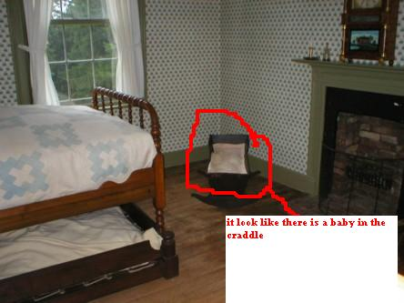

|
Click on any of the titles in the option box below to view the photo:
Mount Washington Tavern is located off the National Road, US 40, in Farmington, Pennsylvania. It is part of the Fort Necessity National Battlefield Park.
Mount Washington Tavern is one of many taverns that were built along the National Road. These taverns gave weary stagecoach travelers a place to eat and rest, and they were also where the stagecoach operators could change horses. The Mount Washington Tavern was built between 1827-1828 by Judge Nathaniel Ewing. It was named Mount Washington since it was built on the Great Meadows that George Washington once owned.
Today the tavern is used as a National Road museum. It gives visitors a glimpse as to what these old taverns were really like.
The park ranger at the tavern said it isn't haunted, however, another ranger at the volunteer center said it is. Park rangers have heard unexplainable footsteps and laughing at the tavern after the park has closed.
In August 2006 I received an e-mail from Sandy B. regarding an observation she made while looking through my photos. She noticed something strange in the photo titled ""Baby's Bed" - you can see her observation below:

In November 2007, I received the following e-mail from Tania with some observations regarding a few of my photos:
Your Mount Washington Tavern photos have a moving bright white orb in them. In the first photo it is near the corner of the building, a small white circle. In the third photo (the tavern sign) you can see the same white orb, but now it is near the front door! Unbelievably, in the second photo (the park sign) there is a glowing orb up above the sign in front of the tree leaves. In the boot scraper photo, there is a small glowing orb on bricks. In the kitchen tools photo I see strange reflections, where the chair is in the middle of the pic, which I have seen in other haunted locations where objects look "reflected." In the photo of the covered wagon, I see a huge orb on the upper left.
In April 2008 I received an e-mail from Rosalie S. about her experiences at the Tavern:
In November 1999, my husband Gary and I were visiting with his family in the Cumberland area of western Maryland for Thanksgiving. His parents still lived in the house in the town of Ellerslie where Gary was raised. My husband and I are both history buffs, so part of our visit there was a tour of some nearby historical sites. We went to Fort Necessity, where George Washington and General Braddock fought during the French and Indian War. After seeing that, we stopped at another site - the Mt. Washington Tavern in Farmington, western Pennsylvania.
Mount Washington Tavern was built in 1828, and provided food, drink and lodging for travelers using the Old National Road (now U.S. 40), especially the stagecoach clientele. It had a parlor, kitchen, dining room and bar on the first floor, and bedrooms on the second. It was sold in 1855, used as a residence, then since 1962 it has been owned and managed by the National Park Service as part of the Fort Necessity Battlefield.
My husband and his father glanced around downstairs, but were eager to see the second floor. I wanted to spend more time looking at the rooms on the first, with their restored with furniture and decor from the time period, so I stayed downstairs. No one else was nearby.
I'd like to emphasize that I have never seen a ghost before, and seeing one was the furthest thing from my mind that day. I looked at the parlor, which, like all the rooms, had a barrier across the entryway so that you could not enter the room - just observe it from the doorway. Then I headed for the bar room. It had a large wooden bar and some tables and chairs. Nothing seemed amiss at first.
Then I noticed an area of blurring behind the bar. At first I thought it was something on my contact lens, so I peered at the area to try to figure out what it was. To my complete shock, the blurred area slowly materialized into a person behind the bar! He was large-tall and heavy-set, a fringe of dark hair around a bald top. He had a short, black stubby moustache. He was dressed in oldtime bartender clothes - white shirt covered by a white apron. He was of a fair complexion, but not "ghostly white" as I would have imagined. He was also not semi-transparent, as often portrayed in the movies. He looked as solid as anyone. I knew immediately that he was a ghost though, because I had watched him materialize.
I was frozen in shock. I couldn't move or scream. I just stood there with my mouth open and stared, trying to figure out what in the world was happening. He didn't make a move. He just stood there, behind the bar, with his hands on the bar, staring right into my eyes. It was his expression that surprised me the most. It wasn't aggressive, angry, happy or sad. The best word that could describe it is "wary." He seemed to not like it that I could see him, and seemed to be waiting to see what I was going to do about it. It was almost a worried expression, as if concerned I would start to scream.
But lucky for him, I had lockjaw at the moment, just as frozen in time as he was. After a few more moments of this, I was able to pull myself away from that doorway and looked around again on the first floor. I thought that if I checked back in a minute or two he would be gone. So I did that. However, he was still there when I went back. He hadn't moved an inch.
I couldn't stand it anymore, so went upstairs to get caught up with my husband and his father. Then we left. I saw no other ghosts in the tavern.
I couldn't talk about it for a long time. I think it was several months before I told my husband. It wasn't just that I thought no one would believe me; it was that the experience was so disorienting. I think when one has a psychic experience, it challenges one's perception of reality. It takes a while to process it. But finally I did tell Gary. He didn't ridicule me or doubt me for a minute. He knows how level-headed I am, and not given to fantasies or mirages. We both majored in science in college. He encouraged me to talk about it with others. Once I did, I found out that a lot of people have had some kind of ghostly experience, or know someone who did.
It was several years after seeing the ghost at Mount Washington Tavern that I got up my nerve to call the Tavern. I found a ranger who had been there for some time. She was very interested in my story. She said that she had not heard of anyone actually seeing a ghost as I did, but there have been manifestations. Among them: strange noises; doors opened which had been shut; the smell of cigar smoke in a room where no one had been smoking. Also, she told me that someone once reported that one day when the tavern was closed, having looked up at a window in an upper floor and seeing what appeared to be a face looking out.
The ranger, Mary Jane, kindly sent me a photocopy of a shot of the former owners of the tavern, Mr. and Mrs. Sampey, to see if Mr. Sampey was the ghost. However, Mr. Sampey looked nothing like the man I saw behind the bar.
I think I'm still haunted in a way, by the memory of my experience. I still think about it and wonder about it. Why did that ghost appear to me? I've been to a number of "haunted houses" since then, visiting places where ghosts have been reported, to see if this could happen again. But I've not seen a ghost since Mount Washington. I don't have any kind of special psychic powers; I guess I just happened to be there when conditions were right, and saw what I saw.
I think that's how it happens with just about everybody who sees a ghost. I encourage anyone who sees or hears anything unusual at the tavern to report it to the rangers, so that we can all learn more about it.
In August 2011 I received an e-mail from Christy about her experiences at the Tavern:
I went to Mount Washington Tavern on Thursday, August 11, 2011 and some strange things occurred.
When I had checked the site for Fort Necessity and the Tavern I was told to expect to have to give myself the tour. When I arrived though, a ranger gave a tour to the Fort but not to Mount Washington.
The tavern had the basement and third floor off limits to the public, but the strange things occurred while I was on the path by myself walking to the tavern and then when I was in the tavern. I was the only one on the path going from Fort Necessity up to the tavern, and I stopped to take pictures from the path of the tavern. My camera had worked up to this point, but when I was behind the tavern on the path trying to take a picture of the back my camera froze up. I had asked the ranger when I reached the tavern if anyone had been on the second or third floor, not knowing which floor it was from the back, but it had looked as if someone had been beckonning me to come from one of those floors. The ranger told me the third floor and basement were off limits to the public, and that no one had been on either of those floors because they had just opened and unlocked the doors for visitors to do self-guided tours just seconds before I arrived.
I also questioned if the tavern was haunted, and the ranger told me she had worked there for five summers. She said that I was being absurd, and that there was no reason to think I saw anything...that it was my camera that was defective along with me, but to go ahead and give myself a self guided tour.
When I was in the kitchen it seemed I could smell the scent of something cooking, and on the second floor in the first bedroom it seemed like someone or something was trying to communicate from by the bassinet/crib. It also looked like someone was in the bassinet/crib.
I brought these things up to the ranger who had remained downstairs by the door, and she again semed to brush me off.
Is it me? Why would my camera work one minute then not the next, but when I moved from the one area and got closer it worked again. And why would I see what seemed like someone on the second or third floor beckonning to me, but be told there was no one there but the ranger who had just unlocked the door.
When I went on to your site I saw what some of the others saw (a light/orb floating in areas and the crib/bassinet in the first room - and the picture does look like something is there). I spoke to a person who has written nine (9) books on paranormal/ghosts, and when I told him of my trip to Mount Washington Tavern, he then showed me pictures from Gettysburg and other places and asked if it was anything like the pictures he had.
All I know is that whatever/whomever I saw wanted me to go upstairs, and it seemed they wanted to convey something although the ranger kept insisting that she was the only person there and that the tavern is not haunted. I felt the presence of someone/something on the path to the tavern, and while in the tavern but could not really tell if it was a man or woman.
If you've had any creepy experiences at the Mount Washington Tavern, please send me an e-mail and I'll post your story on the site.
Where do you want to go? Select your destination:
|